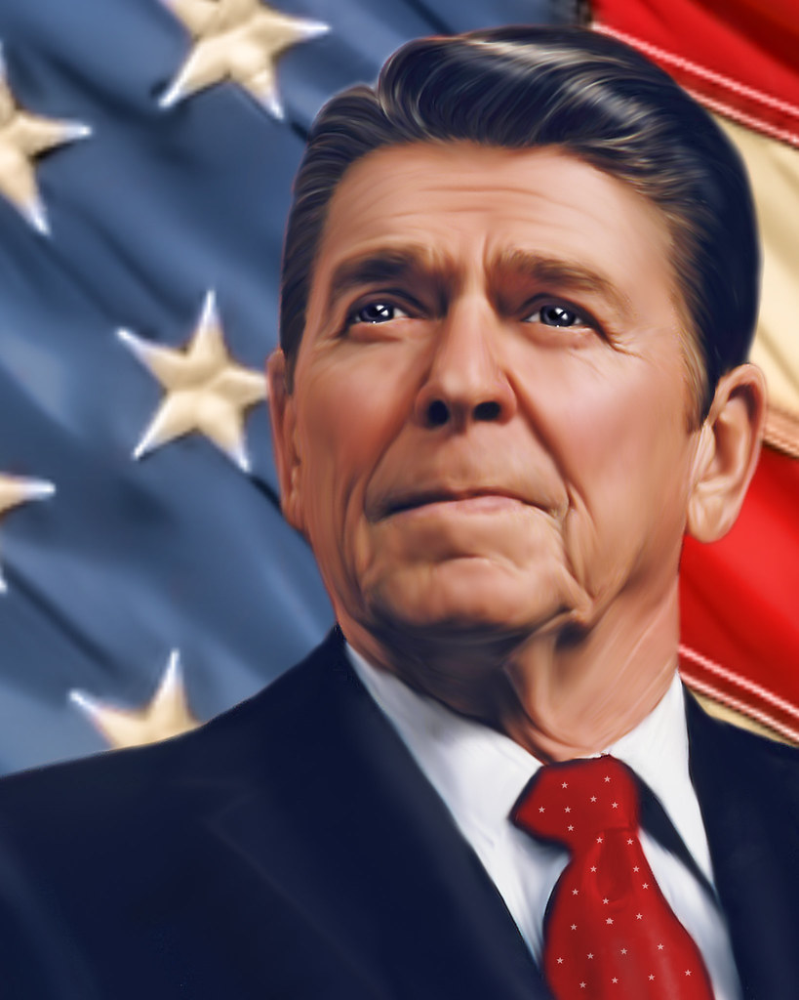
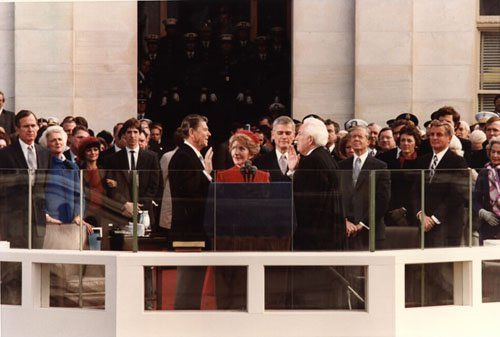

Ronald Reagan

Ronald Reagan's first Inauguration
Ronald Reagan, originally an American actor and politician, became the 40th President
of the United States serving from 1981 to 1989. His term saw a restoration of prosperity at home, with
the goal of achieving “peace through strength” abroad.
Feb. 6, 1911
Ronald Wilson Reagan is born in Tampico, Ill., to Nelle Wilson Reagan and John Edward Reagan. The
Reagans already had one previous son, Neil.
1920
After a series of moves in rural northern Illinois, the Reagans settle in Dixon, Ill., which Reagan
considered his hometown.
1928-1932
Reagan attends Eureka (Illinois) College, where he majored in economics and sociology. During his
sophomore year, Reagan becomes interested in drama. Reagan also serves as student body president
1932
Reagan receives a temporary sports broadcasting job with WOC, a small radio station in Davenport,
Iowa. After WOC consolidates with WHO in Des Moines, "Dutch" recreates Chicago Cubs baseball games
from the studio. WHO, an NBC affiliate, gives Reagan national media exposure.
1937
Reagan enlists in the Army Reserve as a private but is soon promoted to 2nd lieutenant in the
Officers Reserve Corps of the Cavalry. An agent for Warner Brothers "discovers" Reagan in Los
Angeles and offers him a seven-year contract.
1940
Reagan plays Notre Dame football legend George Gipp in his most acclaimed film, Knute Rockne, All
American, The role earns Reagan the nickname "the Gipper."
Jan. 24, 1940
Reagan marries actress Jane Wyman, whom he met while making the movie Brother Rat.
1942
Reagan is called to active duty by the Army Air Force. He is assigned to the 1st Motion Picture Unit
in Culver City, Calif., where he makes over 400 training films.
1949
Reagan and Wyman divorce.
1966
Reagan defeats incumbent California Gov. Edmund G. "Pat" Brown in a landslide.
Nov 4, 1989
Reagan is elected president in a landslide victory over incumbent Jimmy Carter.
Mar 30, 1981
Reagan is shot in the chest upon leaving a Washington hotel but makes a full recovery after surgery.
Three other people, including Reagan press secretary James Brady, are wounded in the assassination
attempt. John Hinckley Jr. is charged but found not guilty by reason of insanity.
Jan. 11, 1989
Reagan gives his farewell address to the nation, in which he says the so-called Reagan revolution
"made a difference."
June 5th, 2004
Ronald Reagan dies in California at the age of 93.